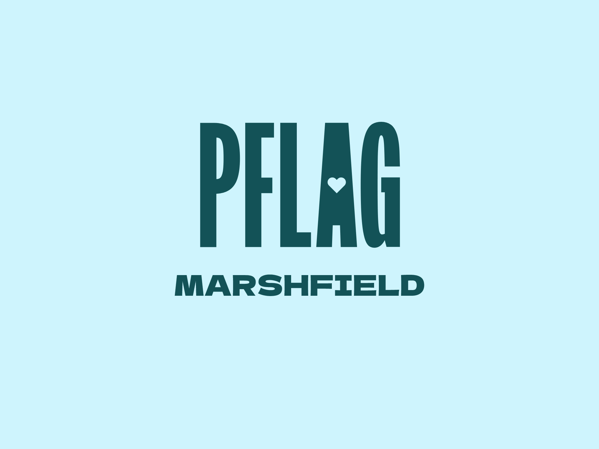

We are the Marshfield chapter of PFLAG. We provide support, education and advocacy for parents, families, friends and allies of Lesbian, Gay, Bisexual, Transgender, Queer (LGBTQ+) and the countless affirmative ways in which people choose to self-identify across north central Wisconsin.
We are your family, friends, and neighbors.
PFLAG was founded in 1973 after a mother publicly supported her gay son. The first formal meeting took place at a church on March 11, 1973. Since that moment PFLAG has grown to over 400 chapters across the nation, all with the aim of supporting lesbian, gay, bisexual, transgender, queer and/or questioning, intersex, asexual, two-spirit (LGBTQ+) people and their parents, families, and allies.
PFLAG Marshfield is one chapter of the PFLAG family. We are a volunteer organization made of community members that provides peer to peer support, education, and advocacy. We represent the Northcentral areas of Wisconsin. Our area is comprised of mostly small town and rural communities. Please contact us for more information.
Everyone is welcome to our chapter events and educational seminars. For our small discussion groups and chapter meetings, the content is specifically geared towards adults. This includes parents and family members of LGBTQ+ loved ones; LGBTQ+ people, and allies such as members of the medical community, social workers, therapists, and educators.
We hold events each month. Please check our social media or subscribe to our newsletter for updates.
Support PFLAG Marshfield by becoming a member or making a tax-deductible donation so we can continue to provide the support, education and advocacy for LGBTQ+ people and their families. By clicking on the button below, you will be taken to PayPal where you can make your tax-deductible donation either through your PayPal account or with a credit card. For instructions on becoming a member or renewing your membership, please see instruction in our Donate section.